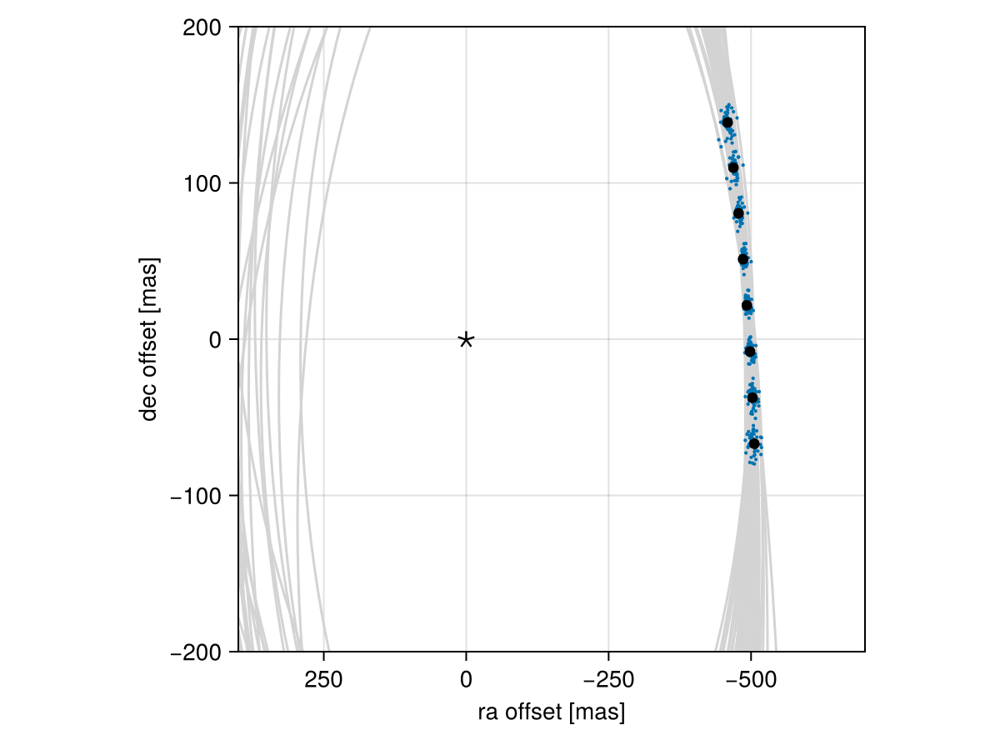
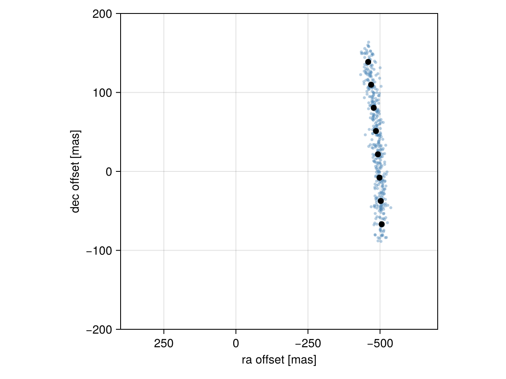

Posterior Predictive Checks
A posterior predictive check compares our true data with simulated data drawn from the posterior. This allows us to evaluate if the model is able to reproduce our observations appropriately. Samples drawn from the posterior predictive distribution should match the locations of the original data.
To demonstrate, we will fit a model to relative astrometry data:
using Octofitter
using Distributions
astrom_dat = Table(
epoch= [50000.,50120,50240,50360,50480,50600,50720,50840,],
ra = [-505.764,-502.57,-498.209,-492.678,-485.977,-478.11,-469.08,-458.896,],
dec = [-66.9298,-37.4722,-7.92755,21.6356, 51.1472, 80.5359, 109.729, 138.651,],
σ_ra = fill(10.0, 8),
σ_dec = fill(10.0, 8),
cor = fill(0.0, 8)
)
A = Body(
name="A",
variables=@variables begin
mass ~ truncated(Normal(1.2, 0.1), lower=0.1) # M⊙
end
)
b = Body(
name="b",
about=A,
variables=@variables begin
a ~ truncated(Normal(10, 4), lower=0.1, upper=100)
e ~ Uniform(0.0, 0.5)
i ~ Sine()
ω ~ UniformCircular()
Ω ~ UniformCircular()
θ ~ UniformCircular()
epoch = 50420.0 # reference epoch for θ. Choose an MJD date near your data.
end
)
astrom_obs = RelAstromObs(astrom_dat; target=b, ref=A, name="simulated astrom")
sys = System(
name="Tutoria",
bodies=[A, b],
observations=[astrom_obs],
variables=@variables begin
plx ~ truncated(Normal(50.0, 0.02), lower=0.1)
end
)
model = Octofitter.LogDensityModel(sys)
using Random
Random.seed!(0)
chain = octofit(model)Chains MCMC chain (1000×29×1 Array{Float64, 3}):
Iterations = 1:1:1000
Number of chains = 1
Samples per chain = 1000
Wall duration = 2.24 seconds
Compute duration = 2.24 seconds
parameters = plx, A_mass, b_a, b_e, b_i, b_ωx, b_ωy, b_Ωx, b_Ωy, b_θx, b_θy, b_ω, b_Ω, b_θ, b_epoch
internals = n_steps, is_accept, acceptance_rate, hamiltonian_energy, hamiltonian_energy_error, max_hamiltonian_energy_error, tree_depth, numerical_error, step_size, nom_step_size, is_adapt, loglike, logprior, logpost, tree_depth, numerical_error
Use `describe(chains)` for summary statistics and quantiles.
Where the model puts the planet
We now have our posterior as approximated by the MCMC chain. A posterior sample is a whole system, not a per-planet orbit object, so we rebuild one system per draw with construct_system and then query it with the usual PlanetOrbits functions:
# Instead of building a system for all rows in the chain, just pick
# every twentieth row.
ii = 1:20:1000
systems = [construct_system(model, chain, i) for i in ii]50-element Vector{PlanetOrbits.System{2, 1, Float64, PlanetOrbits.Parallax{Float64}, (:A, :b), @NamedTuple{}, 2}}:
System{2 bodies, 1 orbits, Float64}
System{2 bodies, 1 orbits, Float64}
System{2 bodies, 1 orbits, Float64}
System{2 bodies, 1 orbits, Float64}
System{2 bodies, 1 orbits, Float64}
System{2 bodies, 1 orbits, Float64}
System{2 bodies, 1 orbits, Float64}
System{2 bodies, 1 orbits, Float64}
System{2 bodies, 1 orbits, Float64}
System{2 bodies, 1 orbits, Float64}
System{2 bodies, 1 orbits, Float64}
System{2 bodies, 1 orbits, Float64}
System{2 bodies, 1 orbits, Float64}
System{2 bodies, 1 orbits, Float64}
System{2 bodies, 1 orbits, Float64}
System{2 bodies, 1 orbits, Float64}
System{2 bodies, 1 orbits, Float64}
System{2 bodies, 1 orbits, Float64}
System{2 bodies, 1 orbits, Float64}
⋮
System{2 bodies, 1 orbits, Float64}
System{2 bodies, 1 orbits, Float64}
System{2 bodies, 1 orbits, Float64}
System{2 bodies, 1 orbits, Float64}
System{2 bodies, 1 orbits, Float64}
System{2 bodies, 1 orbits, Float64}
System{2 bodies, 1 orbits, Float64}
System{2 bodies, 1 orbits, Float64}
System{2 bodies, 1 orbits, Float64}
System{2 bodies, 1 orbits, Float64}
System{2 bodies, 1 orbits, Float64}
System{2 bodies, 1 orbits, Float64}
System{2 bodies, 1 orbits, Float64}
System{2 bodies, 1 orbits, Float64}
System{2 bodies, 1 orbits, Float64}
System{2 bodies, 1 orbits, Float64}
System{2 bodies, 1 orbits, Float64}
System{2 bodies, 1 orbits, Float64}
System{2 bodies, 1 orbits, Float64}construct_system returns a PlanetOrbits.System carrying every body, and each observable takes an explicit (target, ref) pair — raoff(sol, :b, :A). That is what lets the same call express a companion measured against the host, against the barycentre, or against another companion.
Calculate and plot the location the planet would be at each observation epoch:
using CairoMakie
epochs = astrom_obs.table.epoch
x = Float64[]
y = Float64[]
for posys in systems
traj = orbitsolve(posys, epochs)
append!(x, raoff.(traj, :b, :A))
append!(y, decoff.(traj, :b, :A))
end
fig = Figure()
ax = Axis(
fig[1,1], xlabel="ra offset [mas]", ylabel="dec offset [mas]",
xreversed=true,
aspect=1
)
for posys in systems
Makie.lines!(ax, posys, :b, :A, color=:lightgrey)
end
Makie.scatter!(
ax,
x, y,
markersize=3,
)
Makie.scatter!(ax, astrom_obs.table.ra, astrom_obs.table.dec,color=:black, label="observed")
Makie.scatter!(ax, [0],[0], marker='⋆', color=:black, markersize=20,label="")
Makie.xlims!(400,-700)
Makie.ylims!(-200,200)
fig
Looks like a great match to the data! Notice how the uncertainty around the middle point is lower than the ends. That's because the orbit's posterior location at that epoch is also constrained by the surrounding data points. We can know the location of the planet in hindsight better than we could measure it!
Replicating the data, not just the orbit
The plot above shows the posterior over the model prediction. The posterior predictive distribution proper is the distribution over replicated data — model prediction plus measurement noise, p(ỹ | y) = ∫ p(ỹ | θ) p(θ | y) dθ. Octofitter can draw from it directly: take a posterior sample, hand it to generate_from_params with add_noise=true, and read the simulated table back off the returned system.
This works for any observation type in the model, not just astrometry, which is the reason to prefer it over hand-rolling the replication per data type:
Random.seed!(1)
fig = Figure()
ax = Axis(
fig[1,1], xlabel="ra offset [mas]", ylabel="dec offset [mas]",
xreversed=true, aspect=1
)
for i in 1:20:1000
θ = Octofitter.mcmcchain2result(model, chain, i)
rep = generate_from_params(sys, θ; add_noise=true)
tbl = rep.observations[1].table
Makie.scatter!(ax, tbl.ra, tbl.dec, color=(:steelblue, 0.4), markersize=5)
end
Makie.scatter!(ax, astrom_obs.table.ra, astrom_obs.table.dec, color=:black,
label="observed", markersize=10)
Makie.xlims!(400,-700)
Makie.ylims!(-200,200)
fig
The replicated points should scatter around the real ones with roughly the measurement uncertainty. If the real data sit systematically outside the replicated cloud, the model cannot reproduce them — that is the check.
Observations belong to the system, so the replicated data are at rep.observations[i], in the same order they were listed in System(...; observations=[...]).
You can follow this same procedure for any kind of data modelled with Octofitter. For a quantitative version of the same idea — how much each individual data point is influencing the fit — see Cross-Validation.